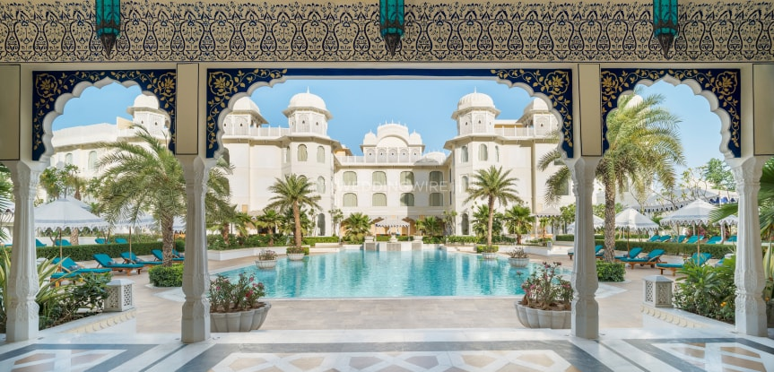
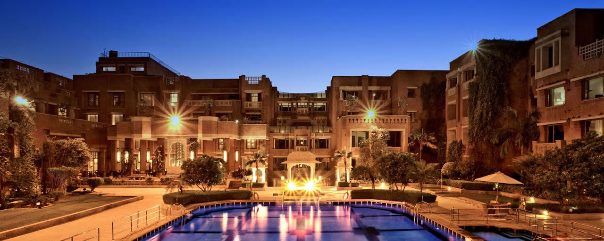
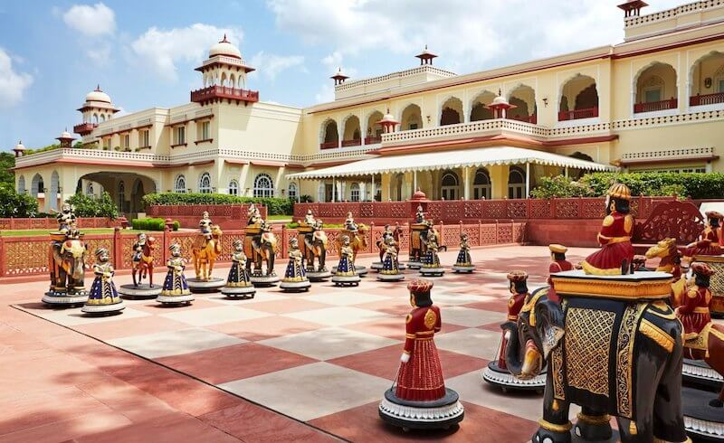

Experience a sincerely warm welcome when you stay with us at The Oberoi Rajvilas, Jaipur. Spread over 32 acres of beautifully landscaped gardens, with traditional architecture, flaming mashaal torches and reflection pools. Exquisite accommodation,
including luxury tents inspired by the era of Maharajas, fine restaurants serving authentic Rajasthani and international cuisines, specially curated romantic experiences for couples and our sincere hospitality. The perfect setting for the
holiday of a lifetime.

J.W Marriott
Experience Rajasthan, India's famed "Land of Kings," at JW Marriott Jaipur Resort & Spa. Our 5 star resort, winner of TripAdvisor's Certificate of Excellence, pays homage to majestic Rajasthan with a blend of traditional architecture and modern
elements. Choose from eight distinct accommodation experiences, from luxury rooms and suites to private villas with plunge pools and courtyards. Explore the flavors of Rajasthan and beyond at on-site restaurants including Indian and international
cuisines as well as Mediterranean fare in a stunning rooftop space. Our luxury hotel offers all you need to relax and unwind.
Rambagh Palace by Taj
Originally built in 1835, Rambagh Palace has stepped gracefully through many royal transitions—from the home of the queen’s favourite handmaiden, to royal guesthouse and hunting lodge, and later as the residence of the Maharaja Sawai Man Singh
II and his queen, Maharani Gayatri Devi. Today, this jewel in the Taj’s crown offers 78 stunningly restored grand luxury rooms and suites which were the chambers of the former Maharaja. Over the years, it has played gracious host to several
illustrious guests, such as Lord Louis Mountbatten, Prince Charles and Jacqueline Kennedy. We invite you to experience, like they have, the finest traditions of Rajput hospitality.

ITC Rajputana
Experience the finest luxury hotel in Jaipur - ITC Rajputana, where we are proud to offer one of the best accommodation in the city with a host of comforts and services in settings that reflect the spirit of Rajasthan and its royalty. Just 15
kilometres from the airport and half a kilometre from the city centre, our regal-influenced design and gardens echo the city’s history. Retreat to our 218 guest rooms and suites equipped with modern amenities. Our restaurants offer tastes
from around the globe, designed along the lines of traditional havelis, this leisure hotel in Jaipur has its own definition of space and splendour.

Jai Mahal Palace
Built in 1745, the Jai Mahal Palace is a stunning piece of Rajasthan’s heritage, a great example of Indo-Saracenic architecture set amidst 18 acres of landscaped Mughal gardens. Jai Mahal Palace has been the residence of three Prime Ministers
of the princely state of Jaipur. Painstakingly restored and recently refurbished, it is now a luxury five-star Taj heritage hotel equipped with all modern-day comforts. The 94 rooms and six suites offer you unbeatable views of the city and
palace gardens. Perfectly located downtown in the heart of the Pink City in Civil Lines, you are close to the main shopping areas and prime historical sites such as Amber Fort, HawaMahal and City Palace.